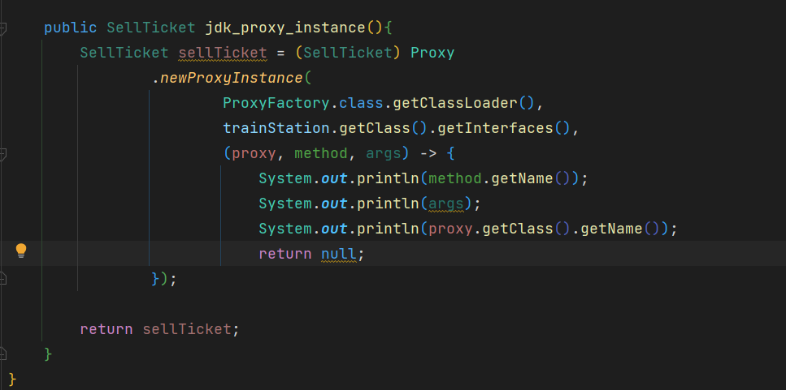
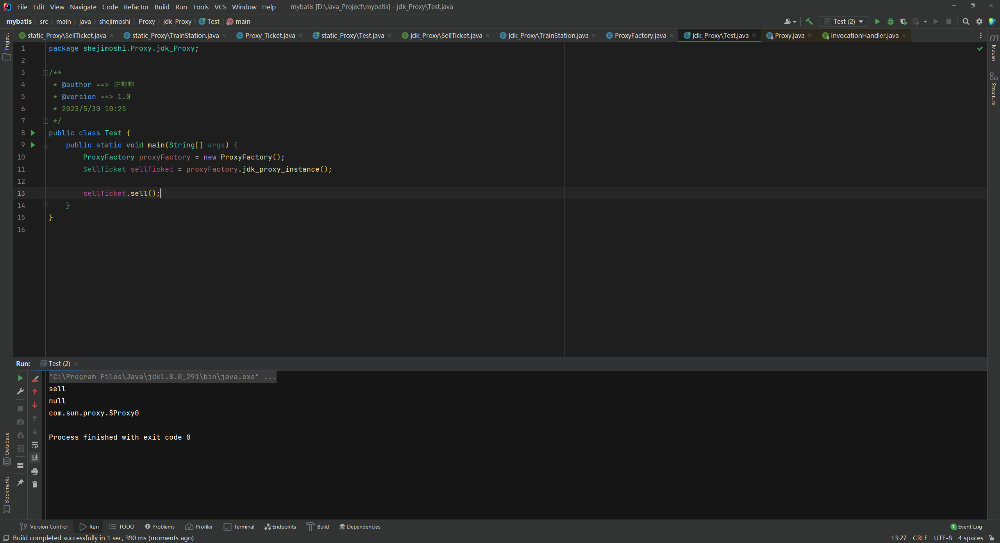

代理模式
代理模式
概述
由于某些原因需要给某对象提供一个代理以控制对该对象的访问。这时，访问对象不适合或者不能直接引用目标对象，代理对象作为访问对象和目标对象之间的中介。
Java中的代理按照代理类生成时机不同又分为静态代理和动态代理。静态代理代理类在编译期就生成，而动态代理代理类则是在Java运行时动态生成。动态代理又有JDK代理和CGLib代理两种。
结构
代理（Proxy）模式分为三种角色：
- 抽象主题（Subject）类： 通过接口或抽象类声明真实主题和代理对象实现的业务方法。
- 真实主题（Real Subject）类： 实现了抽象主题中的具体业务，是代理对象所代表的真实对象，是最终要引用的对象。
- 代理（Proxy）类 ： 提供了与真实主题相同的接口，其内部含有对真实主题的引用，它可以访问、控制或扩展真实主题的功能。
静态代理
示例
现在使用一个案例来说明一下，代理的实现，例如火车站卖票，中间有黄牛卖票的例子

代码
1 | public interface SellTicket { |
1 | public class TrainStation implements SellTicket{ |
1 | public class Proxy_Ticket implements SellTicket{ |
测试

JDK动态代理
Proxy
使用JDK提供的java.lang.reflect包下面Proxy类，该类提供了一个 newInstance( ) 方法
该方法需要三个参数，类加载器，接口的类信息，和一个InvocationHandler的匿名内部类

实现这个匿名内部类需要重写这个类的方法
proxy就是返回的Instance实例对象，Method是被代理类对象的方法，args是该方法的参数

验证

测试

代码实现
1 | public interface SellTicket { |
1 | public class TrainStation implements SellTicket { |
1 | public class ProxyFactory { |
测试

CGLIB代理
CGLIB代理不需要有接口，在JDK动态代理，需要有一个接口，才能实现JDK动态代理
CGLIB是一个功能强大，高性能的代码生成包。它为没有实现接口的类提供代理，为JDK的动态代理提供了很好的补充。
CGLIB坐标
1 | <dependency> |
被代理类
1 | public class TrainStation { |
代理工厂
1 | public class ProxyFactory implements MethodInterceptor { |
结果

三种代理的对比
jdk代理和CGLIB代理
使用CGLib实现动态代理，CGLib底层采用ASM字节码生成框架，使用字节码技术生成代理类，在JDK1.6之前比使用Java反射效率要高。唯一需要注意的是，CGLib不能对声明为final的类或者方法进行代理，因为CGLib原理是动态生成被代理类的子类。
在JDK1.6、JDK1.7、JDK1.8逐步对JDK动态代理优化之后，在调用次数较少的情况下，JDK代理效率高于CGLib代理效率，只有当进行大量调用的时候，JDK1.6和JDK1.7比CGLib代理效率低一点，但是到JDK1.8的时候，JDK代理效率高于CGLib代理。所以如果有接口使用JDK动态代理，如果没有接口使用CGLIB代理。
动态代理和静态代理
动态代理与静态代理相比较，最大的好处是接口中声明的所有方法都被转移到调用处理器一个集中的方法中处理（InvocationHandler.invoke）。这样，在接口方法数量比较多的时候，我们可以进行灵活处理，而不需要像静态代理那样每一个方法进行中转。
如果接口增加一个方法，静态代理模式除了所有实现类需要实现这个方法外，所有代理类也需要实现此方法。增加了代码维护的复杂度。而动态代理不会出现该问题
优缺点
优点：
- 代理模式在客户端与目标对象之间起到一个中介作用和保护目标对象的作用；
- 代理对象可以扩展目标对象的功能；
- 代理模式能将客户端与目标对象分离，在一定程度上降低了系统的耦合度；
缺点：
- 增加了系统的复杂度；
使用场景
远程（Remote）代理
本地服务通过网络请求远程服务。为了实现本地到远程的通信，我们需要实现网络通信，处理其中可能的异常。为良好的代码设计和可维护性，我们将网络通信部分隐藏起来，只暴露给本地服务一个接口，通过该接口即可访问远程服务提供的功能，而不必过多关心通信部分的细节。
防火墙（Firewall）代理
当你将浏览器配置成使用代理功能时，防火墙就将你的浏览器的请求转给互联网；当互联网返回响应时，代理服务器再把它转给你的浏览器。
保护（Protect or Access）代理
控制对一个对象的访问，如果需要，可以给不同的用户提供不同级别的使用权限。